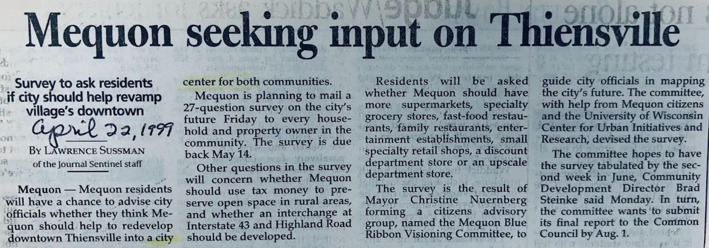
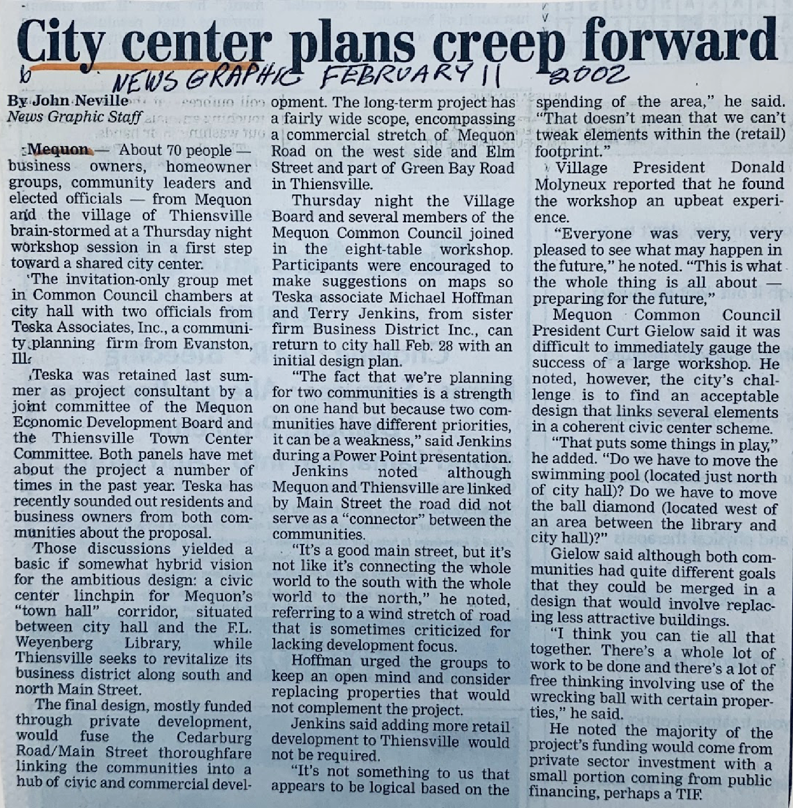
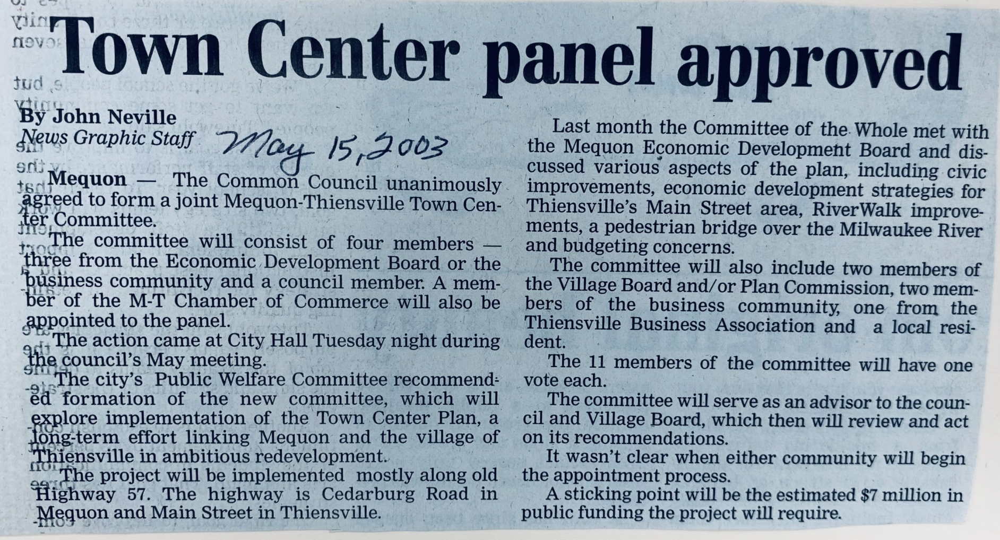
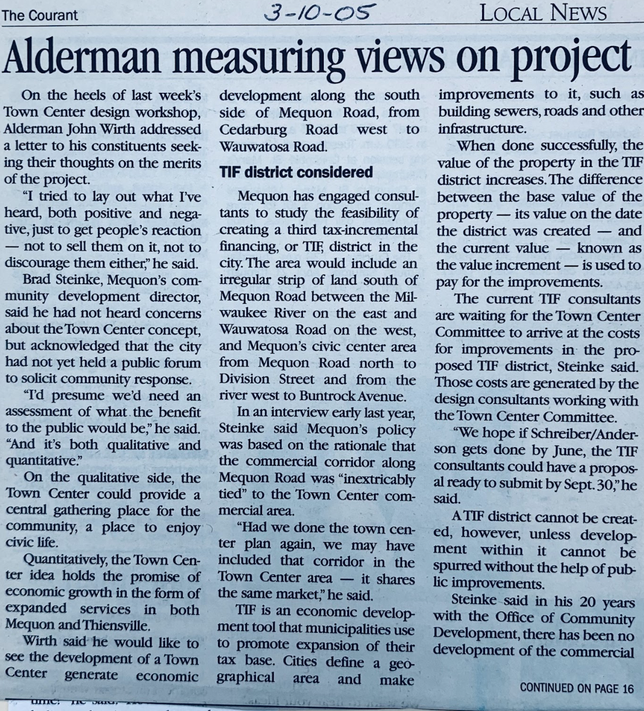

In 1998, Mequon Mayor Christine Nuernberg formed the Mequon Blue Ribbon Visioning Committee. One of the committee’s recommendations was a community survey to gather input on the city’s future plans. One question asked whether the city should help to “redevelop downtown Thiensville into a city center for both communities.” Seventy-five percent of the respondents said yes.
The Visioning Committee recommended in 1999 that the city develop a center, a focus. Nuremberg suggested that it could be between the city hall and the library and extend north into Thiensville. She went on to say “It’s just a start, and we have to wait to see what the next steps are.”
It's ironic that Mequon, where large parts of the city's land remain undeveloped, would recognize the interest in a town center. John McIlwain is quoted in John Bell's piece in "Mortgage Banking", as saying that mix-use developments are successful because of an increased interest in urbanization.
The city center idea first came before the Mequon Common Council’s Economic Development Board in December, 2000.
In 2002, officials and residents from Mequon and Thiensville brainstormed as a first step toward a shared city center. Common Council President Curt Gielow said that although the two communities had different goals, he thought that they could be merged successfully and that most funding would come from private investment with a minority coming from public financing, maybe a TIF.
In May of 2003, Mequon’s Common Council agreed to form the Mequon-Thiensville Town Center Committee with representatives from both communities. A newspaper account reports that “A sticking point will be the estimated $7 million in public funding the project will require.”
In 2005, Mequon city officials were again looking for resident input. The city retained a consultant to study the feasibility of funding the town center through a TIF. The TIF cannot be formed unless other means of development fail to spur investment. Brad Steinke, Mequon’s community development director at the time, said that in his 20 years in the job, there had been no development in the TIF district.
